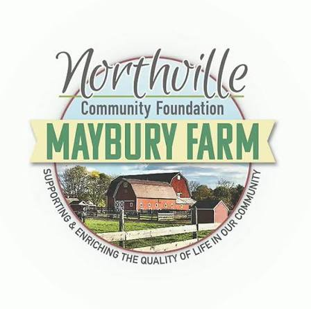

Clubs
Clubs 'n Stuff
After my first semester in NHS, I realized that there was much more beyond the classroom, specially the clubs. Due to my interests in engineering and robotics, I decided to join the Robotics team, Team 548 - Robostangs. The few first months it was awesome, I got into the Mechanical subgroup-Responsible of manufacturing and assembly-I received training in different machines and procedures, I got experience in Robotics, and I got to make some new friends. Every meeting from October to December I was the first one to get in the shop and one of the last people to go... but after we finished dismanteling the off-season robot everything went downhill.
The senior members that were there before started hoarding all the main projects, after December of 2025, the most I helped in the Manufacturing Process was in changing the bits for the CNC Router. I was put to cleaning the carpets, organizing screws and just walk around doing nothing, with time I got sick of doing nothing... so I simply "quit". I stopped going to the meetings and started focusing on school. I attended FRC Robotics from October 2025 to June 2026.

After building my Jr. Level One Certificate from the NAR, I wanted to dive deeper into the rocketry hobby... so I joined Northville High School's Rocketry team, helped out in the construction and design of both payload and actual rocket... although I did more documentation than anything.
To be seen...